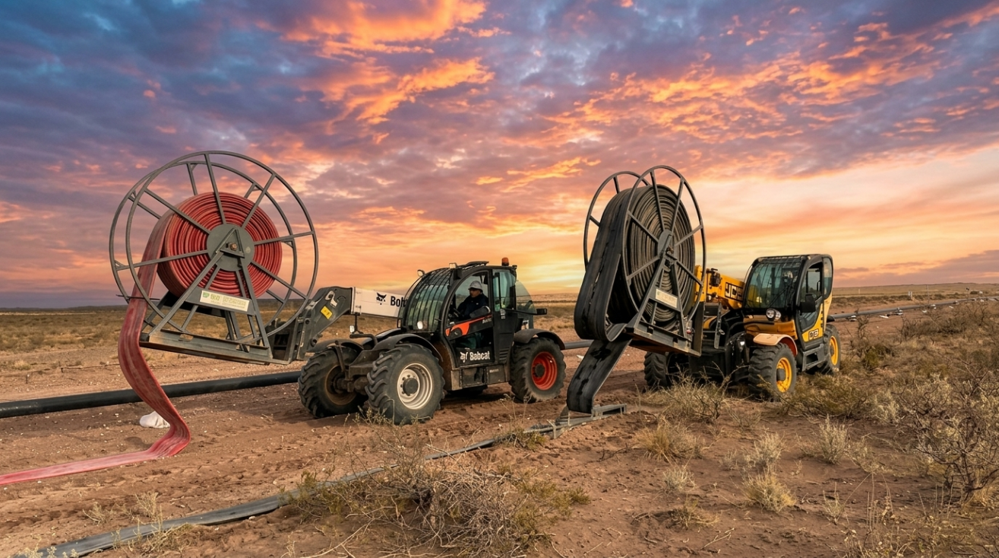
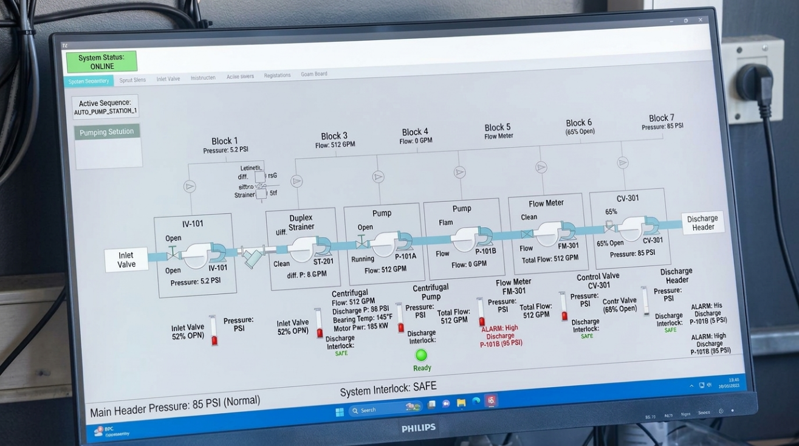
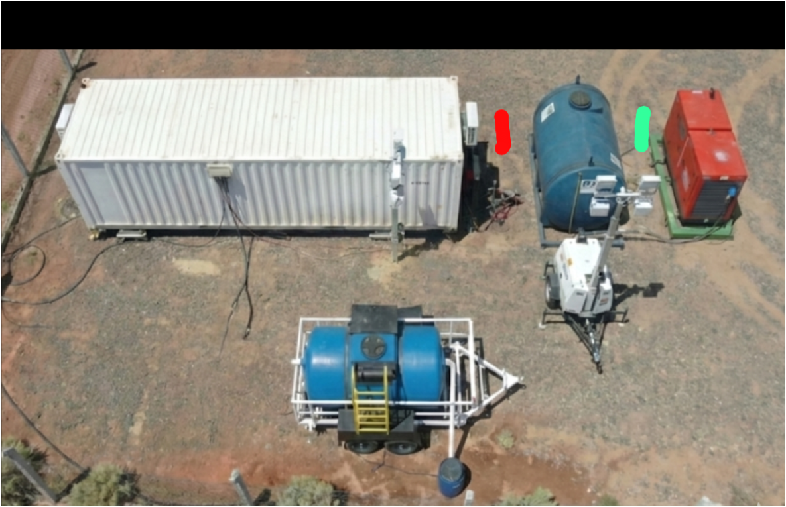

Conformación de Equipos, Liderazgo y Control de Procesos
En los yacimientos de la Cuenca Neuquina, la rotación de personal es intensa y los frentes de trabajo se desarrollan bajo diagramas de 14x14 o 7x7 con turnos de 12 horas. El éxito operacional de una cuadrilla de Fractura, Coiled Tubing, Well Testing, Wireline o Water Transfer depende de la capacidad del supervisor para seleccionar talentos, estructurar el pase de guardia y controlar el cumplimiento de objetivos sin desvíos.
Lección 1 — Selección Práctica y Conformación de Cuadrillas de Campaña
Entrevistas técnicas de yacimiento vs. pruebas de habilidad en obra · Diversidad de perfiles en el equipo · Inducción en tres etapas · Legislación laboral neuquina (Ley 20.744 y convenios petroleros).
2.1.1 Evaluación Práctica en Terreno
En el ambiente de alta exigencia de Vaca Muerta, el supervisor debe evaluar en el terreno si el candidato cuenta con la destreza motriz y la templanza psicológica para operar bajo frío nocturno, viento intenso y presión de tiempos.
Matriz de Perfiles y Competencias por Servicio de Campo
RECLUTAMIENTO OPERATIVO| Servicio | Puestos Críticos de Cuadrilla | Prueba Práctica Ineludible | Habilidad Blanda Fundamental |
|---|---|---|---|
| Fractura Hidráulica | Operador de Blender, Operador de Bomba 2.500 HP, Mecánico de Missile. | Purga de líneas de alta presión y alineación de dosificación de arena. | Comunicación clara y trabajo coordinado bajo ruido extremo. |
| Well Testing | Técnico de Choke Manifold, Operador de Separador, Químico de Muestras. | Calibración de estrangulador y drenaje de fondo de separador con H₂S simulado. | Atención al detalle y alerta permanente ante cambios de presión. |
| Coiled Tubing | Operador de Cabina, Operador de Inyector, Mecánico de Bombas. | Enhebrado de tubería continua en inyector y prueba hidrostática de BOP. | Concentración prolongada y control de variables múltiples simultáneas. |
| Wireline | Ingeniero de Registro, Rigger de Lubricador, Operador de Guinche. | Armado mecánico de herramienta de fondo y montaje de lubricador en altura. | Disciplina estricta en el cumplimiento de listas de verificación. |
| Torqueo de Bridas | Técnico de Llave Hidráulica, Operador de Unidad de Potencia. | Calibración de manómetro a torque de tabla y apriete en cruz de brida 10.000 psi. | Paciencia y rigurosidad en el control de paralelismo de caras. |
| Water Transfer | Maquinista de Manipulador, Operador de Bomba Booster, Cuadrillero. | Despliegue de manguera layflat de 12" y acople de racord con grapas segmentadas. | Resistencia física al clima adverso y capacidad de trabajo en soledad. |
| Supervisión de Obra Civil | Maquinista de Excavadora/Motoniveladora, Topógrafo de Campo, Capataz de Suelos. | Nivelación de rasante con estación total y sondeo/cateo manual seguro de ductos. | Visión espacial, prudencia operativa y anticipación de interferencias enterradas. |
| Supervisión General & SIMOPS | Company Man de Soporte, Coordinador de Pad, Auditor HSEQ de Locación. | Simulación de parada de emergencia (ESD) y resolución de conflictos de permisos cruzados. | Temple bajo presión comercial, asertividad y liderazgo en contingencias. |

Coordinación de Cuadrillas en Maniobras Pesadas
Operación de tendido sincronizado con dos manipuladores telescópicos. La asignación clara de roles y la comunicación visual evitan accidentes por atrapamiento en el radio de giro de la maquinaria.
2.2 Pase de Guardia Efectivo (*Shift Handover*) y Bloqueo LOTO
El cambio de turno como punto ciego de seguridad · Los 5 pasos del pase de guardia · Protocolo de Aislamiento de Energía Cero (LOTO) · Caja de bloqueo grupal y custodia de llaves.
Estudios de accidentología en la industria del petróleo demuestran que **más del 40% de los incidentes graves con pérdida de contención o atrapamiento ocurren durante o dentro de las dos horas posteriores al cambio de turno**. La prisa por retirarse del yacimiento y la transmisión oral incompleta de novedades son los mayores enemigos de la seguridad.
Protocolo Estructurado de Pase de Guardia (*Shift Handover*)
OBLIGATORIO EN CADA RELEVO| Etapa del Pase | Acción Concreta de los Supervisores | Puntos Críticos a Auditar | Documento Respaldatorio |
|---|---|---|---|
| 1. Recorrida Física Conjunta | Ambos supervisores (saliente y entrante) caminan juntos por el pozo, el manifold y la batería de equipos. | Válvulas abiertas/cerradas, pérdidas de fluido, estado de mangueras y orden y limpieza (5S). | Inspección visual compartida en campo. |
| 2. Revisión de Permisos PTS | Cotejo de todos los permisos de trabajo activos, suspendidos y cancelados durante la jornada. | Trabajos en caliente finalizados (inspección de 30 min post-corte), espacios confinados cerrados. | Tablero de permisos PTS de locación. |
| 3. Auditoría de Bloqueo LOTO | Verificación de candados y tarjetas colocados en tableros eléctricos, interruptores y válvulas manuales. | Comprobación de energía cero (purgas abiertas, manómetros en cero, botoneras bloqueadas). | Planilla de registro LOTO y caja de candados. |
| 4. Revisión de Parámetros | Traspaso de datos operativos: presiones de pozo, caudales, volúmenes de arena/agua bombeados, stocks. | Anomalías observadas en telemetría SCADA, alarmas recurrentes y rendimiento de motores. | Parte diario de operaciones del turno. |
| 5. Firma y Transferencia | Firma formal del Libro de Guardia traspasando la responsabilidad operativa y legal de la locación. | Horario exacto del traspaso, firma y aclaración de ambos supervisores habilitados. | Libro foliado de guardia de yacimiento. |
Secuencia de las 6 Etapas de Aislamiento de Energía Cero (LOTO)
CONTROL DE ENERGÍAS PELIGROSAS| Etapa | Denominación | Acción Técnica Requerida | Verificación Ineludible |
|---|---|---|---|
| Paso 1 | Preparación para el corte | Identificar todas las fuentes de energía involucradas (eléctrica, hidráulica, neumática, residual). | Revisión del diagrama de flujo unifilar (P&ID). |
| Paso 2 | Notificación | Avisar a todos los operadores del pad y personal afectado que el equipo saldrá de servicio. | Confirmación verbal por radio y en persona. |
| Paso 3 | Apagado del equipo | Detener motores o bombas mediante parada normal controlada (no pulsador de emergencia). | Indicador de parada en panel de control. |
| Paso 4 | Aislamiento físico | Bajar disyuntores, cerrar válvulas maestras, desacoplar cardanes o colocar bridas ciegas (*pancake*). | Corte físico y mecánico comprobable. |
| Paso 5 | Bloqueo y Etiquetado | Colocar candado rojo de seguridad y tarjeta personal con nombre, fecha y empresa del ejecutor. | Una llave exclusiva en poder del operario. |
| Paso 6 | Verificación de Energía Cero | Intentar encender el equipo en vacío (arranque de prueba), abrir purgas para aliviar presión remanente. | El manómetro marca 0 psi y el motor no gira. |

Control Telemétrico y Datos del Turno
El pase de guardia debe cotejar los registros históricos de telemetría para advertir tendencias de calentamiento de cojinetes o caídas de caudal.

Inspección de Válvulas y Líneas en Relevo
Verificación de la posición de válvulas mariposa y bloqueos de seguridad en tren de motobombas antes de asumir el nuevo turno de 12 horas.
Lección 2 — Plan de Supervisión y Objetivos SMART Multi-Servicio
Supervisión personal, de proceso y de producto · Definición de metas SMART en yacimiento · Reducción de tiempos muertos (NPT) · Indicadores de gestión de equipos (OEE, MTBF).
2.3.1 Objetivos SMART en Operaciones de Servicios de Yacimiento
Fijar objetivos vagos como *"hacer el pozo rápido y seguro"* no sirve en Oil & Gas. El supervisor debe traducir las directivas del cliente en parámetros cuantitativos, con tolerancias exactas y responsables asignados.
Matriz de Objetivos SMART por Servicio en Vaca Muerta
METAS OPERACIONALES| Servicio | Objetivo Específico (S) | Métrica Medible (M) | Meta Alcanzable (A) | Plazo Límite (T) |
|---|---|---|---|---|
| Fractura | Completar la estimulación de etapas sin paradas no programadas por mezcla de arena. | Caudal de bombeo en bpm y concentración de propante en ppa. | 85 bpm constantes y 0 minutos de NPT por blender. | Durante las 6 etapas del turno. |
| Well Testing | Estabilizar la producción del pozo y tomar muestras de fondo sin contaminación. | Caudal de gas en MMm³/d y BS&W de crudo. | BS&W < 0.5% en boca de tanque de prueba. | Primeras 8 horas de ensayo. |
| Coiled Tubing | Moler 15 tapones frac plug a 3.200 metros de profundidad. | Tiempo de molienda por tapón y retorno de viruta plástica. | < 25 minutos de molienda por tapón. | Turno de 12 horas diurno. |
| Cementación | Bombear lechada principal y bache lavador a densidad de diseño. | Densímetro nuclear en ppg y presión final de tope. | Densidad de 15,8 ppg ± 0,2 ppg sostenida. | Ventana de bombeo de 90 minutos. |
| Water Transfer | Suministrar agua continua al pad manteniendo nivel en pulmón. | Caudalímetro de entrega en m³/h y nivel de tanque en %. | 1.050 m³/h y tanque entre 50% y 80%. | Continuo 24/7 en campaña. |
Lección 3 — Diagnóstico Operativo y Análisis de Causa Raíz
Metodología de los 5 Porqués · Diagrama de Ishikawa en pozo · Resolución ágil de contingencias · Matriz de diagnóstico de anomalías de campo.
Guía Rápida de Diagnóstico de Fallas Operativas en Servicios de Yacimiento
RESOLUCIÓN DE ANOMALÍAS| Servicio | Anomalía Observada | Causa Raíz Típica | Acción Inmediata del Supervisor |
|---|---|---|---|
| Fractura | Presión de tratamiento trepa súbitamente 1.500 psi sin aumentar caudal. | Inicio de arenamiento (*screen-out*) en las fracturas de la formación. | Cortar adición de arena en el blender de inmediato y desplazar línea con agua limpia a régimen máximo. |
| Well Testing | Presión en cuerpo del separador trifásico se acerca al 90% de la válvula de seguridad (PSV). | Línea de gas al quemador (*flare*) congelada por hidratación (efecto Joule-Thomson). | Abrir bypass de estrangulador, inyectar metanol antihidratos y calibrar piloto de antorcha. |
| Coiled Tubing | La tensión en el indicador de peso sube al límite de sobretracción al intentar extraer tubería. | Aprisionamiento de sarta por sedimentación de arena de fractura en el anular. | No sobretraccionar (evita rotura de tubería); restablecer circulación a máximo caudal con geles lavadores. |
| Water Transfer | Ruido de pedregullo metálico en cuerpo de bomba centrífuga y manómetro oscilando. | Cavitación severa por filtro canasto obstruido o nivel bajo en la toma. | Reducir RPM del motor diésel de inmediato para evitar destrucción del impulsor; limpiar canasto. |

Organización Espacial y Base de Campaña
Esquema de distribución de módulos de descanso, comedor, sala de reuniones técnicas y pañol de repuestos. La adecuada segregación física garantiza el reposo de las cuadrillas nocturnas.
Test Evaluativo Interactivo · Nivel 2
Poné a prueba tu criterio en selección de personal, procedimientos LOTO, pases de guardia y resolución de fallas en pozo. Hacé clic en la opción correcta.
Evaluación de Competencias · Nivel 2 (5 Preguntas)
MÍNIMO APROBATORIO: 80% (4 de 5)* Respondé las 5 preguntas para habilitar tu puntaje.